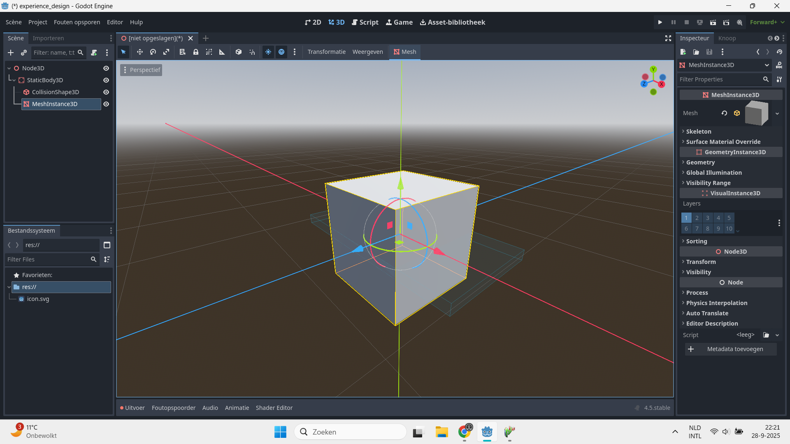
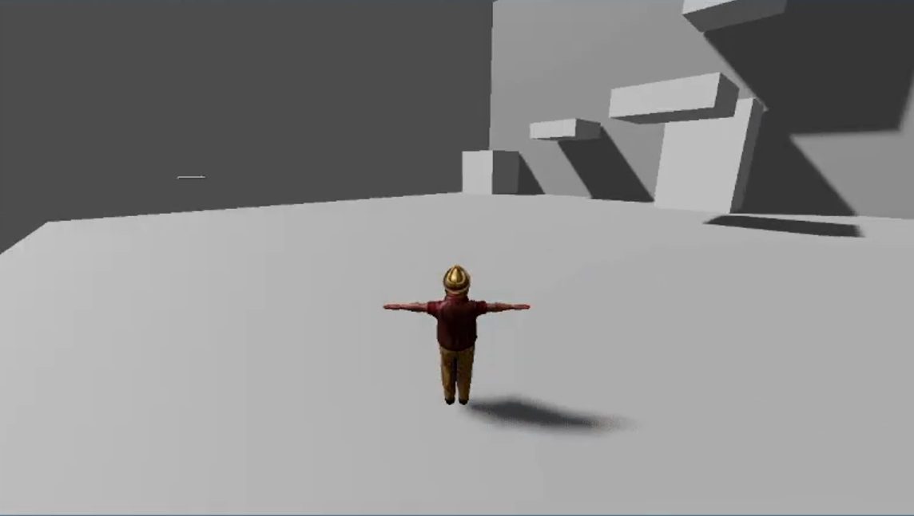
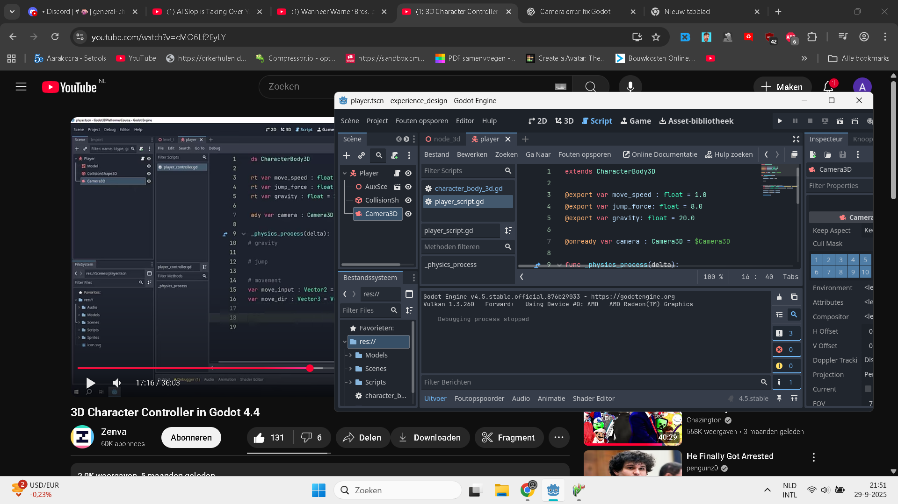

Ik ging een level maken in Godot. Godot is een game engine waarmee je 2D en 3D games kunt maken. Als iemand die houdt van gamen en programmeren, leek het mij een leuk idee voor werken met 3D.
Ik maakte eerst een 3D kubus en ging experimenteren met de collisions en textures, zoals hieronder te zien is. Hierna kon ik een testgebied maken. Ik raakte bekend met de functionaliteiten van Godot en kon daarna beginnen met het maken van het echte level.

Ik maakte een level met een grote vloer, een hoge muur en meerdere platforms. De speler moet naar de top van de muur klimmen door op de platforms te springen. Het is een erg kort level, maar hierdoor kan ik experimenteren met platforming.

De speler moet natuurlijk rond kunnen bewegen in de level, dus ik schreef code voor het hoofdpersonage. Ik zocht op hoe ik de speler kan laten springen en bewegen. Ik volgde instructievideo’s die gingen over karakters coderen. Daarna ging ik onderzoeken hoe de speler met de camera kan bewegen.
